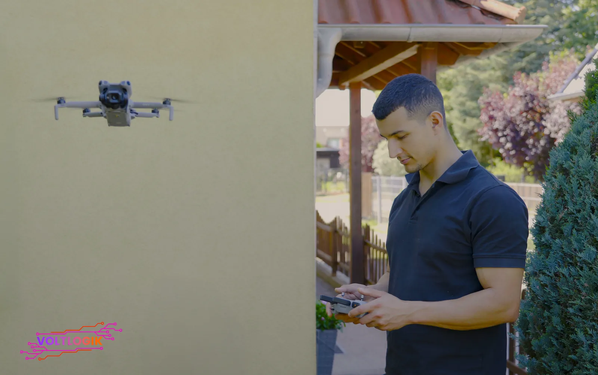
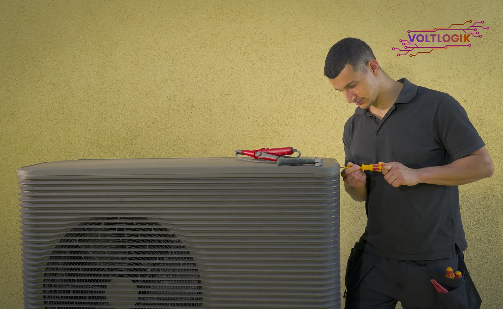
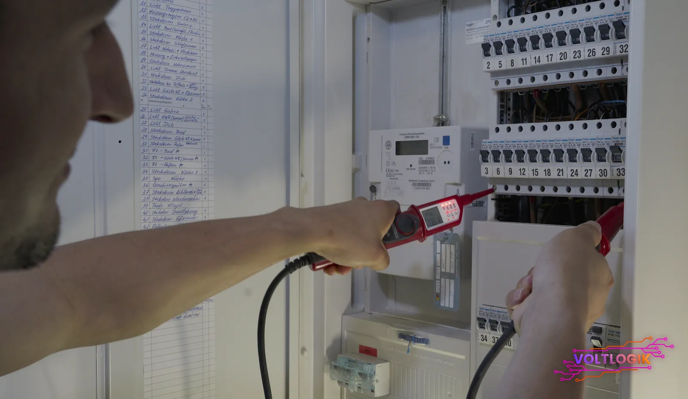
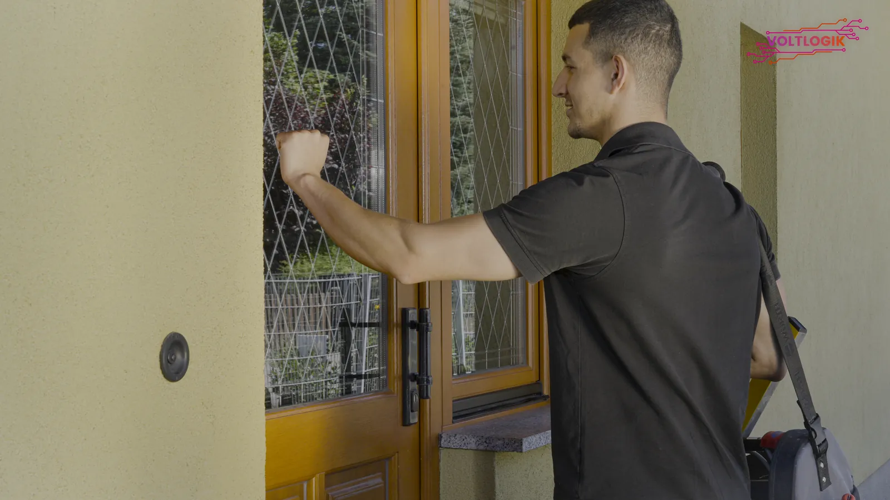

Unsere Leistungen
Erneuerbare Energie und klassische Elektrotechnik aus einer Hand, in Berlin und Brandenburg.
PV-Anlagen komplett
Planung und Installation Ihrer Photovoltaikanlage, von der Montage bis zur Inbetriebnahme und Anmeldung.

Wärmepumpen-Anschluss
Elektrischer Anschluss Ihrer Wärmepumpe, fachgerecht und inklusive Anmeldung beim Netzbetreiber.

Zählerschrank & Unterverteilung
Komplette Sanierung oder neuer Zählerschrank: Wir übernehmen die alten Stromkreise, setzen einen neuen Zählerschrank und nutzen den alten bei Bedarf als Unterverteilung weiter. Natürlich auch ganz normale Unterverteilungen.

Fehlersuche & Reparaturen
Strom weg, Sicherung fliegt raus oder eine Steckdose ist defekt? Wir finden den Fehler und reparieren ihn in Ihrem Haushalt.

Weitere Leistungen
Ebenfalls aus einer Hand.
Wallbox-Installation (11 kW & 22 kW)
Installation Ihrer E-Auto-Wallbox in 11- oder 22-kW-Ausführung. Wallboxen bis 11 kW sind beim Netzbetreiber meldepflichtig, 22-kW-Wallboxen brauchen vorher seine Zustimmung. Beides übernehmen wir für Sie.
PV-Teilinstallation (AC)
Sie haben die DC-Montage schon selbst erledigt? Wir übernehmen den AC-Anschluss, die Prüfung und die Anmeldung.
Speichererweiterung
Wir erweitern Ihre bestehende PV-Anlage um einen Batteriespeicher.
Anmeldung & VDE-Prüfung
Anmeldung anmeldepflichtiger Geräte sowie Prüfung nach DIN VDE 0100-600 mit Prüfprotokoll.
SLS & Überspannungsschutz
Nachrüstung von SLS-Schaltern und Überspannungsschutz, wie es die Technischen Anschlussbedingungen (TAB) der meisten Netzbetreiber vorschreiben.
Elektroinstallation
Klassische Elektroarbeiten im Alt- und Neubau: Steckdosen, Leitungen, Erweiterungen und mehr.
Bereit für Ihr Projekt?
Schildern Sie uns kurz Ihr Vorhaben. Wir melden uns zeitnah.